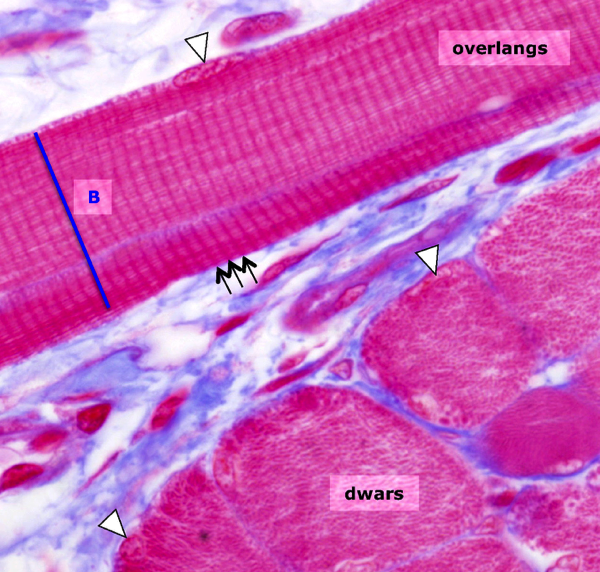

Skeletspierweefsel:
Een skeletspiercel is embryonaal ontstaan uit een fusie van éénkernige myoblasten. Daardoor bezit de skeletspiercel vele honderden kernen. Bovendien zit het sarcoplasma nagenoeg volledig vol met myofibrillen, die ervoor zorgen dat de kernen tegen de plasmamembraan (=sarcolemma) worden gedrukt. Skeletspiercellen zijn cilindervormig en strekken zich uit over de hele lengte van de spier. Ze kunnen sterk in lengte variëren, waarbij de myofibrillen altijd even lang zijn als de skeletspiercel zelf. De organisatie van myofilamenten in myofibrillen zorgt voor de typische dwarsstreping van skeletspiercellen die je op een overlangse doorsnede kan waarnemen.
Een skeletspiercel is embryonaal ontstaan uit een fusie van éénkernige myoblasten. Daardoor bezit de skeletspiercel vele honderden kernen. Bovendien zit het sarcoplasma nagenoeg volledig vol met myofibrillen, die ervoor zorgen dat de kernen tegen de plasmamembraan (=sarcolemma) worden gedrukt. Skeletspiercellen zijn cilindervormig en strekken zich uit over de hele lengte van de spier. Ze kunnen sterk in lengte variëren, waarbij de myofibrillen altijd even lang zijn als de skeletspiercel zelf. De organisatie van myofilamenten in myofibrillen zorgt voor de typische dwarsstreping van skeletspiercellen die je op een overlangse doorsnede kan waarnemen.

Overlangs en dwars aangesneden dwarsgestreepte skeletspiercellen. Op de overlangse doorsnede zie je duidelijk de afwisseling van donkere A-banden (zwarte pijlen) en lichte I-banden. De cel zelf heeft een beperkte breedte (B) maar loopt in de lengte nog ver door buiten de randen van deze foto. De kernen (pijlpunten) liggen tegen het sarcolemma aan. Merk op dat in de dwarse doorsneden de myofibrillen ook dwars zijn aangesneden en dus enkel zichtbaar zijn als kleine puntjes; het bandenpatroon is hier niet te zien!
Vordering zelfstudie spierweefsel: